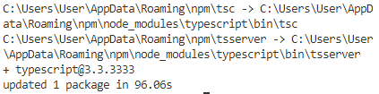
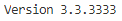

Praktikum 2
1 | Typescript
Bagian 1 : Instalasi Typescript
- ketik perintah yang ada dibawah ini
npm install -g typescript maka hasilnya seperti ini

cek versi dari typescript yang sudah terinstall
tsc --versionhasilnya yakni seperti dibawah ini

membuat direktori dan membuat file didalam direktori tersebut
mkdir ts-hello cd ts-helloberilah nama file tersebut main.ts pada direktori ts-hello dan tulis code dibawah ini
function log(message){ console.log(message); } let message = 'Hello User!'; log(message);buka terminal untuk mengonversi file typescript ke javascript
tsc main.tshasilnya seperti ini

dan jika dilakukan perintah
ls -amaka hasilnya terdapat 2 file

Bagian 2 : Declaring Variables
seperti gambar dibawah ini

mendeklarasikan do something untuk menghasilkan yang ada di
console.log
Bagian 3 : Types
tipe data, dimana banyak sekali tipe data pada angular dan hampir sama dengan yang lainnya. yang membedakan yakni dimana code
letdisini sebagai all character
Bagian 4 : Type Assertion
dimana type assertion ini sebagai deklarasi dari tipedata yang pada bagian sebelumnya

Bagian 5 : Arrow Function
dimana kita dapat mendeklarasikan isi function dengan sebuah arah seperti
=>